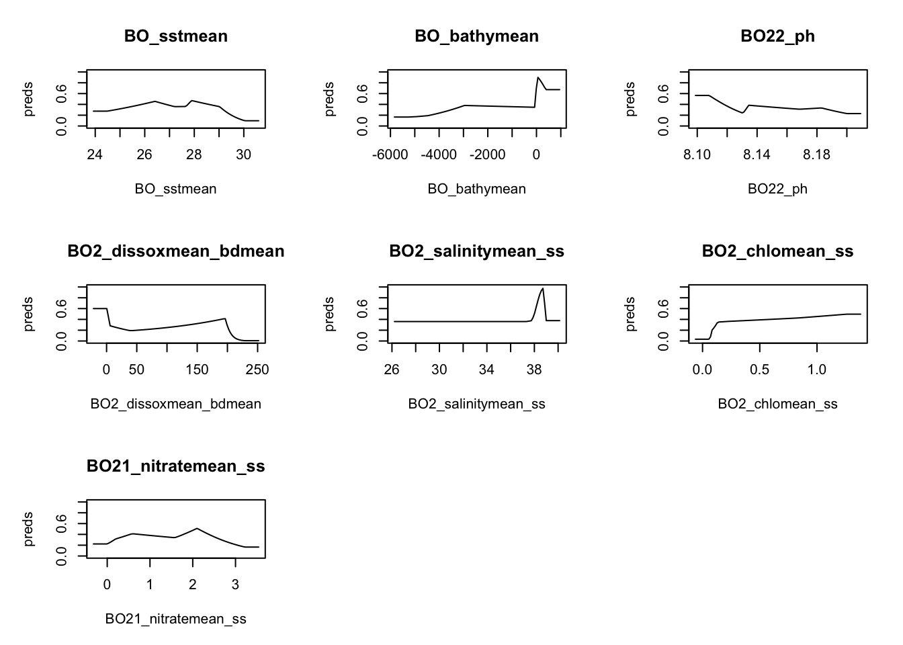

devtools::install_github("BigelowLab/maxnet")
install.packages(c("dplyr", "sf", "stars", "geodata",
"dismo", "lubridate", "sdmpredictors",
"ggplot2", "cmocean", "janitor", "DT",
"here"))Fit SDM
We will use the presence and absence data and the environmental layers that we created in the previous steps to assemble the data frames needed to fit our SDM model.
Pre-SDM Set-up
You will need to install a new version of maxnet for this tutorial. No need to do this on the JupyterHub. It is already installed.
Load the needed packages.
suppressPackageStartupMessages({
library(maxnet)
library(dplyr)
library(sf)
library(stars)
library(geodata)
library(dismo)
library(lubridate)
library(sdmpredictors)
#library(zoon)
library(ggplot2)
library(cmocean)
library(janitor)
library(DT)
})Set the file location.
here::i_am("tutorial/Steps_sdm_maxnet.Rmd")here() starts at /Users/eli.holmes/Documents/GitHub/ohw23_proj_marinesdmsLoad region files. We created our region objects in a separate file Region data and saved these in data/region. We will load these now.
Load the bounding box polygon and create a bounding box.
#Loading bounding box for the area of interest
fil <- here::here("data", "region", "BoundingBox.shp")
extent_polygon <- sf::read_sf(fil)
bbox <- sf::st_bbox(extent_polygon)Load occurence data
Here we load the data prepared in the previous step.
# presence data
fil <- here::here("data", "raw-bio", "io-sea-turtles-clean.csv")
occ.sub <- read.csv(fil)Create sf_points data frame.
occ.points <- sf::st_as_sf(occ.sub, coords = c("lon", "lat"), crs = 4326)
head(occ.points)Simple feature collection with 6 features and 7 fields
Geometry type: POINT
Dimension: XY
Bounding box: xmin: 53.083 ymin: 6.40193 xmax: 59.87883 ymax: 24.577
Geodetic CRS: WGS 84
sci.name obsv.datetime life.stage bathy SST SSS common.name
1 Caretta caretta 2011-04-12T19:12:41Z Juvenile 3051 28.67 35.74 Loggerhead
2 Chelonia mydas 2018-03-31T06:44:00Z <NA> 14 27.96 38.71 Green
3 Chelonia mydas 2019-05-28T12:15:00Z <NA> 2 27.93 38.65 Green
4 Caretta caretta 2011-04-11T04:03:19Z Juvenile 2736 26.92 36.10 Loggerhead
5 Caretta caretta 2011-03-24T14:33:23Z Juvenile 2030 26.68 36.05 Loggerhead
6 Chelonia mydas 2018-04-05T23:33:00Z <NA> 2 27.94 38.67 Green
geometry
1 POINT (59.87883 6.40193)
2 POINT (53.201 24.508)
3 POINT (53.083 24.577)
4 POINT (54.28696 16.05778)
5 POINT (53.83602 16.52469)
6 POINT (53.092 24.549)Load background data
# absence data
fil <- here::here("data", "raw-bio", "pts_absence.csv")
pts.abs <- read.csv(fil) # X is lon and Y is latCheck column names.
colnames(pts.abs)[1] "X" "Y"Change columns names to lon and lat and remove any NAs in the data.
colnames(pts.abs) <- c("lon","lat")
pts.abs <- na.omit(pts.abs)Convert to sf_points object. Set the crs to 4326.
abs.points <- sf::st_as_sf(pts.abs, coords = c("lon", "lat"), crs = 4326)Get the environment for the lat/lon locations
Here we create the data frame with the environmental variables for our presence and absence locations.
Load environmental layers
Set the location of the data directory.
dir_env <- here::here("data", "env")
options(sdmpredictors_datadir = dir_env)Specify the layers that we want. The layers were saved to the data/env directory.
layercodes <- c("BO_sstmean", "BO_bathymean", "BO22_ph", "BO2_dissoxmean_bdmean", "BO2_salinitymean_ss", "BO2_chlomean_ss", "BO21_nitratemean_ss")Load the layers into the env object. We want to set rasterstack equal true to get one file for our variables.
env <- sdmpredictors::load_layers(layercodes, rasterstack = TRUE)Create a stars object
There are a few ways that we can get the values of the environmental variables in our raster stack for the lat/lon locations. We will use the stars and terra functions as these are the new (2023) packages in R for this purpose. You will find older approaches if you search and possibly AI will suggest older approaches.
Step one is to convert our raster stack to a stars object and split the stars object into layers.
env.stars <- stars::st_as_stars(env) # convert to stars object
env.stars <- terra::split(env.stars)Extract the variables for our points
Now we can extract the variables for our presence and absence points.
occ.env <- stars::st_extract(env.stars, sf::st_coordinates(occ.points)) %>%
dplyr::as_tibble()
abs.env <- stars::st_extract(env.stars, sf::st_coordinates(abs.points)) %>%
dplyr::as_tibble()Now we have a data frame with the variables for presence and absence.
head(abs.env)# A tibble: 6 × 7
BO_sstmean BO_bathymean BO22_ph BO2_dissoxmean_bdmean BO2_salinitymean_ss
<dbl> <dbl> <dbl> <dbl> <dbl>
1 28.4 -2445 8.16 111. 36.2
2 26.9 -3142 8.12 119. 36.5
3 28.3 -4549 8.19 159. 36.0
4 27.1 -4970 8.17 180. 35.5
5 26.8 -3869 8.16 156. 36.0
6 28.0 -5095 8.17 183. 35.4
# ℹ 2 more variables: BO2_chlomean_ss <dbl>, BO21_nitratemean_ss <dbl>Let’s check the sizes. They should have the same number of rows.
dim(occ.points)[1] 2064 8dim(occ.env)[1] 2064 7Let’s check the sizes. They should have the same number of rows.
dim(abs.points)[1] 1000 1dim(abs.env)[1] 1000 7Our environmental data have some NAs. We need to remove these.
any(is.na(occ.env))[1] TRUEany(is.na(abs.env))[1] TRUERemove the NAs.
occ.env <- na.omit(occ.env)
abs.env <- na.omit(abs.env)SDM Model
We will fit with MaxEnt using the maxnet package. The function is
mod <- maxnet::maxnet(pres, env_df)env_df is a data frame of environmental data (in columns) for each location (in rows) of the presences and absences. presis a string of 0s and 1s specifying if the row inenviron` is a presence (1) or absence (0).
Set up the env_df
We combining the two data frames with rbind().
env_df <- rbind(occ.env, abs.env)Set up the pres string
The rows of occ.env are all 1 (presence) and the rows of abs.env are all 0 (absent).
pres <- c(rep(1, nrow(occ.env)), rep(0, nrow(abs.env)))Run the model
sdm.model <- maxnet::maxnet(pres, env_df)Model metrics
responses <- plot(sdm.model, type = "cloglog")
Save model
env.stars.crop <- env.stars %>% sf::st_crop(bbox)
fil <- here::here("data", "models", "io-turtle.RData")
save(sdm.model, env.stars.crop, occ.points, abs.points, file=fil)